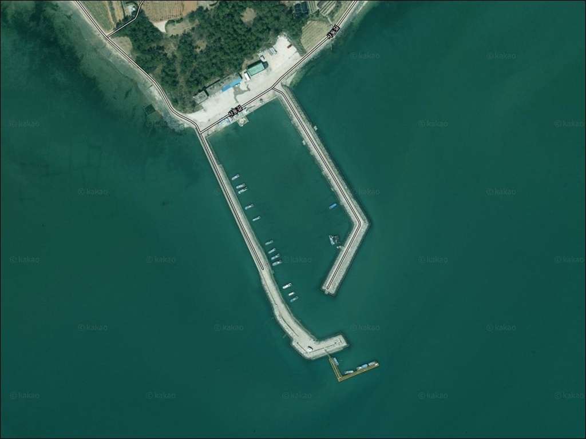
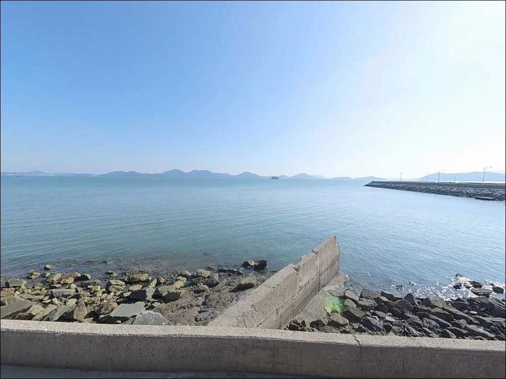
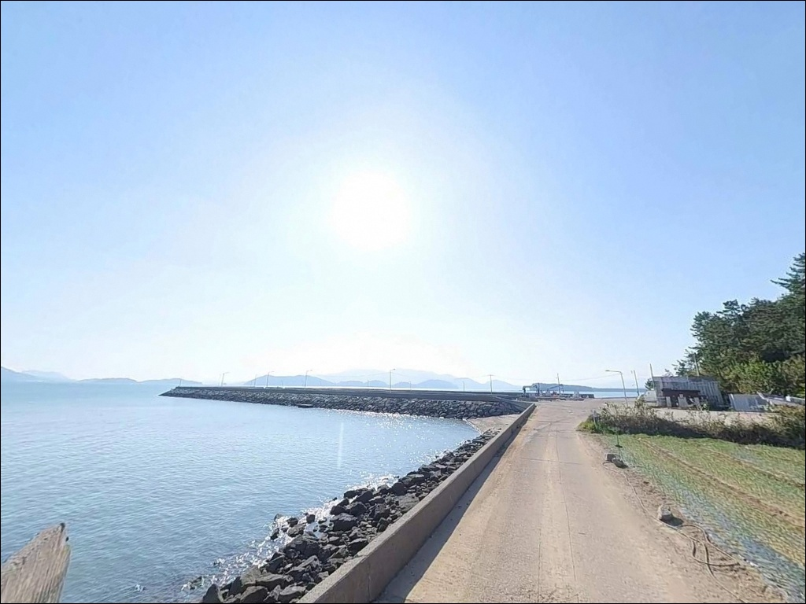
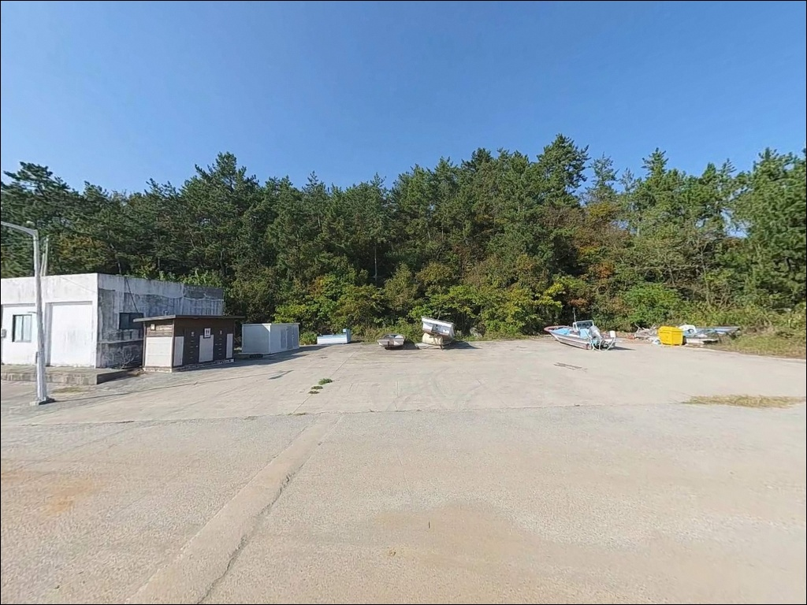
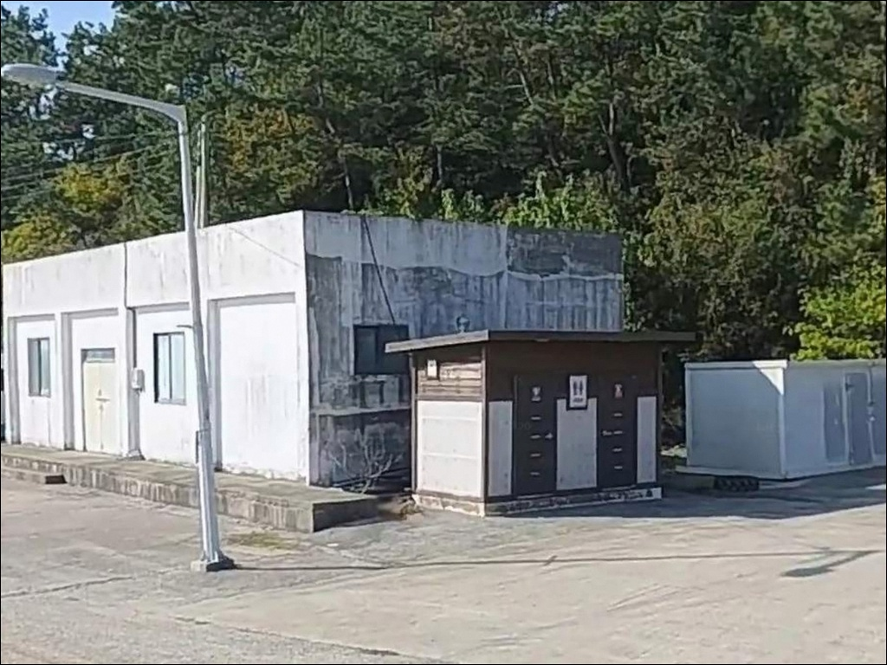
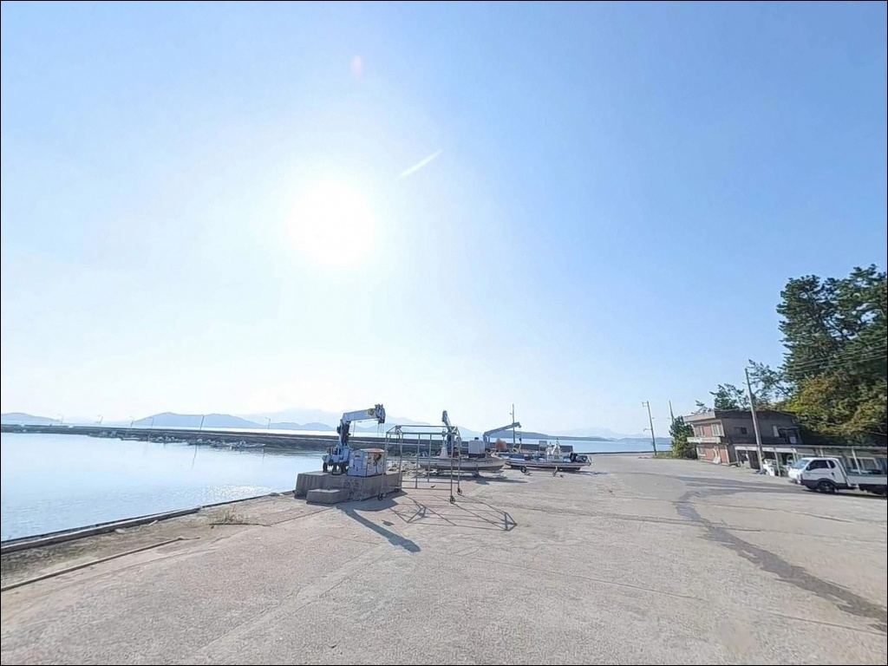
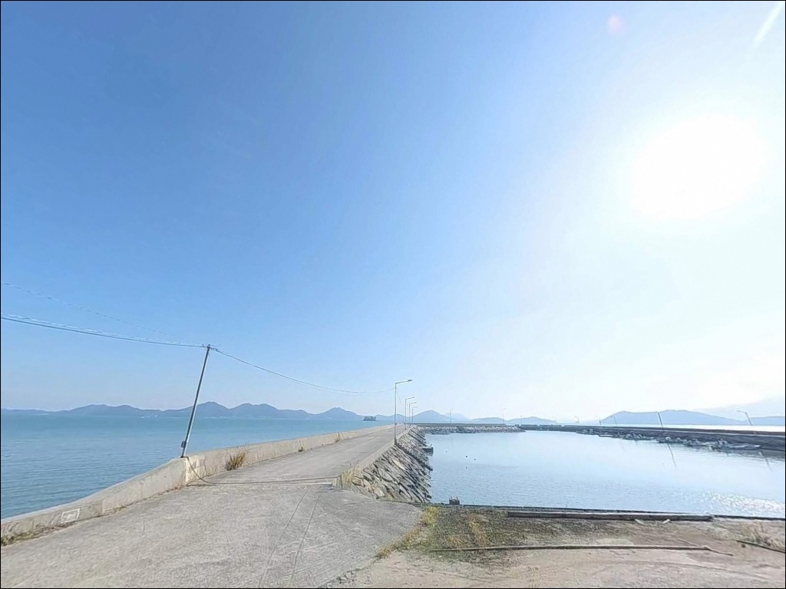
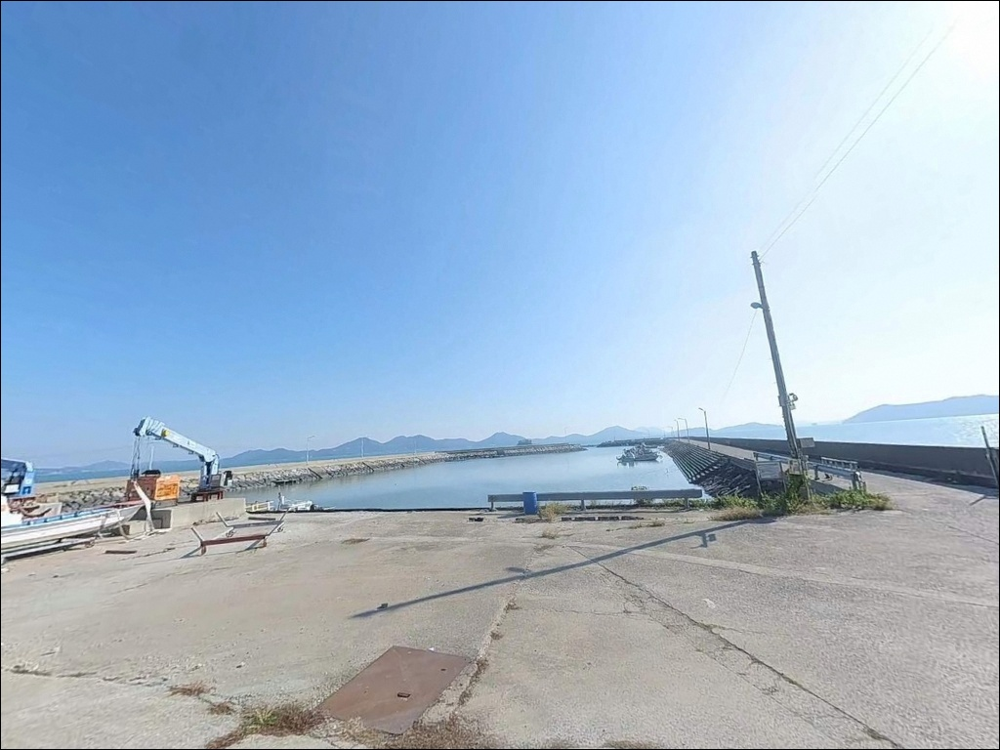
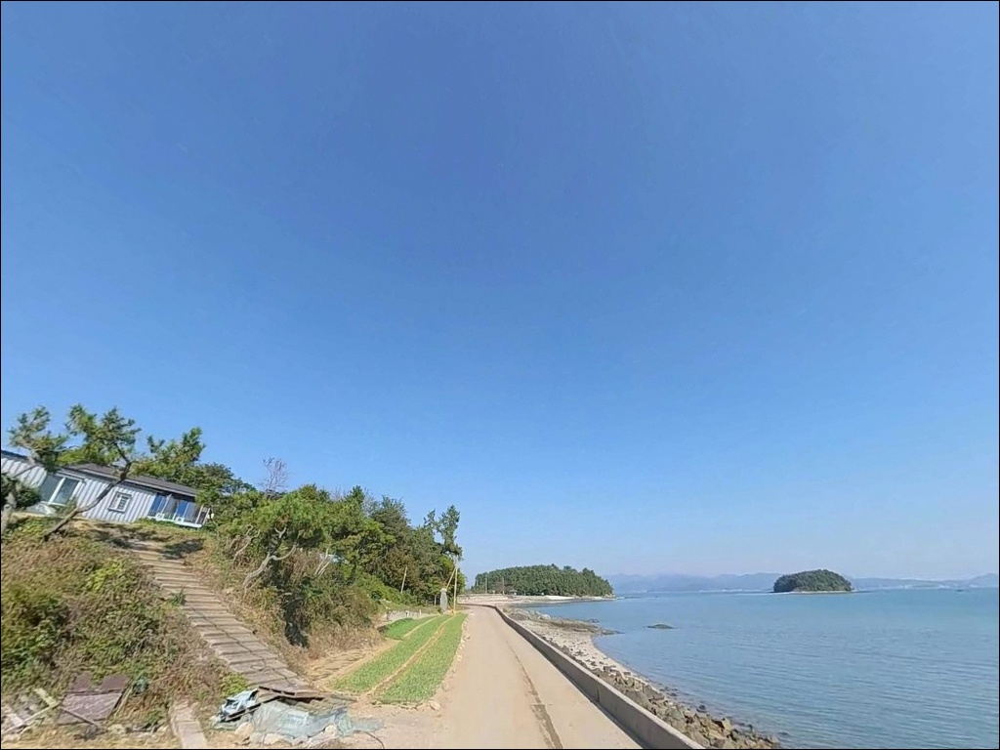

내동항, 전남 해남군 방파제 생활 낚시 성지 차박 스팟 추천


포인트 안내
내동항
전남 해남군 북일면 내동리 14-1
내동항은 간조 시 내항 바닥이 노출되는 구조의
내만형 소형 어항입니다.
물때를 무시하고 진입하면
낚시 가능한 구간이 절반 이하로 줄어드는
물때 의존도가 높은 포인트로,
만조 전후 1~2시간이 가장 안정적인 입장 타이밍입니다.
완도와 해남 사이 내만 해역을 면한 이 항은
방파제 190m와 선착장 123m를 갖추고 있으며,
해안도로 변에 바로 접해 있어
차량 진입과 단기 주차는 큰 어려움 없이 가능합니다.
지역 언론에서 북일 내동이 해남 낚시 포인트로
언급된 바 있는 생활 낚시 거점입니다.
이 글은 내동항의 진입 환경, 차박 체류 조건,
지형 기반 낚시 여건과 방식별 공략 조건에 집중합니다.
조황 단정이나 특정 어종 보장은
이 글의 범위에 포함되지 않습니다.

1. 진입 동선과 포인트 접근성
내동항은 북일면 면소재지에서
내동리 방향 해안도로를 따라 내려오면
도로와 직접 맞닿는 형태로 위치합니다.
진입로는 승용차 기준으로 통행에 문제 없는
포장 해안도로이며,
급경사 구간은 없는 편입니다.
선착장 앞 공터와 방파제 입구 도로변이
주요 주차 후보 구간입니다.
소형~중형 차량 기준으로
2~4대 수용이 가능한 공간이 형성되며,
선착장 접근 직전 구간에서
노폭이 다소 좁아지는 구간이 있어
대형 캠핑카나 카라반은 사전 확인이 필요합니다.
항 내부 및 선착장 주변에서
회차 공간이 확보되는 구조입니다.
어선 출입 동선과 겹치지 않는 자리를 먼저 확인하고
주차 위치를 정하는 것이 기본 순서입니다.

2. 차박 환경과 야간 체류 여건
내동항은 해안도로 변에 위치해
차량 접근이 쉽고 단기 체류에는 무난한 구조입니다.
마을 민가 밀집도가 낮고
야간 차량 통행도 적은 편이라
프라이버시는 상대적으로 양호한 수준입니다.
낚시 후 짧게 머무는 용도로는 부담이 적습니다.
마을 가로등이 항구 입구까지 이어져 있어
완전한 암흑 환경은 아닙니다.
다만 방파제 끝단 방향의 조명은 제한적이므로
야간 낚시 시에는 개인 헤드랜턴을 반드시 챙겨야 합니다.
외항이 완도 방향으로 열려 있어
남풍 계열 바람이 강한 날에는 외항 쪽이 직접 영향을 받습니다.
내만 구조라 파도 직접 영향은 제한적이며
내항 쪽은 상대적으로 잔잔한 편입니다.
장박 캠핑형 차박보다는
낚시 거점으로 하룻밤 머무는 형태가
이 포인트 공간 구조에 잘 맞습니다.


3. 주변 편의시설 및 인프라 현황
북일면 소재지 방향으로 차량 5분 거리에
편의점과 소규모 마트가 위치합니다.
주유소도 같은 방향에서 확인되는 구조로,
출발 전에 연료와 기본 식료품을
채워두고 진입하면 현장에서 불편함이 줄어듭니다.
어항 구내에는 방파제와 선착장 시설이 정비되어 있으며,
관리청은 해남군입니다.
어업 용도 중심의 소형 항 특성상
낚시객을 위한 별도 편의시설은 기대하기 어렵습니다.
완전 자급 준비를 기본으로 진입하는 것이
이 포인트를 편하게 이용하는 방식입니다.
응급 상황 발생 시 해남읍 방향까지
약 20~25km 거리가 소요됩니다.
비상약품과 비상 연락 수단을
사전에 갖추고 출조하는 것이 기본입니다.

4. 물때가 낚시 진입 가능 여부를 결정하는 이유
내동항 방문 전에 가장 먼저 확인해야 할 것은
물때입니다.
내만형 소형 항 특성상
남해 조차(조수 간만의 차)가 2~4m 수준에 달하며,
간조 시에는 내항 바닥이 드러나는 구간이 형성됩니다.
만조 전후 1~2시간이 유효 낚시 시간대로,
이 타이밍을 먼저 계산한 뒤 출발 시각을 정하는 것이
이 포인트를 헛걸음 없이 공략하는 방법입니다.
기상 변화도 함께 확인해야 합니다.
외항이 남풍 계열 바람에 직접 열려 있는 구조로,
남동풍이 강할 때에는 파고가 오르는 경우가 있습니다.
기상청 해상예보를 당일 아침 한 번 더 확인하고 출발하는 것이
현장에서 쓸데없는 이동을 막는 판단 기준입니다.
뻘바닥 구간이 넓어 채비 손실이 발생할 수 있습니다.
원투낚시 채비는 여분을 넉넉히 준비하고,
야간 입장 시에는 구명조끼와 헤드랜턴을 반드시 챙겨야 합니다.
소형 어항 특성상 이른 새벽·일몰 전후 어선 출입 시간대에는
방파제 진입로를 비워두는 것이 기본 매너입니다.

5. 지형 기반 낚시 여건 분석
내동항의 핵심 구조는
방파제 190m와 선착장 123m의 결합입니다.
내항 쪽은 뻘바닥 위주의 완만한 수심 구조이며,
방파제 끝단과 외항 방향으로 나가면
수심이 급변하는 구간이 형성됩니다.
외항 방파제 끝단이 이 포인트의 핵심 자리로,
조류가 살아나는 만조 전후에 집중적으로 공략할 만한 구간입니다.
완도와 해남 사이 수로 방향으로
조류가 빠르게 형성되는 해역입니다.
이 조류 흐름이 외항 끝단에서 활성도를 높이는 요인이 되며,
굴·바지락·낙지·장어 등 다양한 수산자원이
이 해역 일대에 분포하는 환경을 만들고 있습니다.
북일면 해안선 인근으로 양식장이 광범위하게 분포하며,
이는 숭어와 학공치의 연중 유입 패턴으로 이어집니다.
방파제 내항 쪽 석축 주변은
소형 어종이 서식하기 좋은 구조적 조건을 갖추고 있습니다.
망둥어는 이 지역 해역에서 확인된 대표 어종이며,
붕장어와 도다리 계열도 뻘바닥 환경에서 기대해볼 수 있는 어종입니다.
출조 전에 "해남 내동항 조황" 또는 "북일면 낚시" 키워드로
최신 조황을 먼저 검색해 보시기 바랍니다.


6. 포인트에 어울리는 낚시 스타일
이 포인트에서 가장 잘 맞는 낚시는
방파제 외항 끝단을 노리는 원투낚시입니다.
뻘바닥과 사니질이 섞인 외항 구간은
봉돌 30~40호 수준의 채비를 멀리 던진 뒤
바닥층을 기다리는 방식에 적합한 구조입니다.
붕장어·도다리·망둥어 계열이
이 방식에서 기대해볼 수 있는 어종입니다.
릴찌낚시는 외항 방향의 조류를 태우는 방식으로 운용합니다.
방파제 구조물 주변과 끝단이 주요 자리이며,
가을~초겨울 시즌 감성돔이
이 해역 일대에서 기대되는 어종입니다.
조류가 살아 있는 만조 전후 타이밍에
끝단에서 흘리는 방식이 이 포인트 구조에 잘 맞습니다.
소형 루어낚시도 병행이 가능합니다.
내만 특성에 맞게 경량 지그헤드 리그를 활용하며,
외항 방파제 석축 주변과 끝단 방향을
천천히 탐색하는 방식이 현실적입니다.
가을철에는 갑오징어 에깅도 방파제 석축 주변에서 운용이 가능하며,
숭어와 학공치가 양식장 인접 해역을 따라 연중 유입되는 패턴도
이 포인트의 활용 폭을 넓히는 요소입니다.

7. 대안 포인트와 플랜 B 동선
내동항 여건이 여의치 않을 때
가장 먼저 이동할 수 있는 대안은
사내방조제 일대입니다.
북쪽으로 약 2~3km 거리에 위치하며,
직선형 방조제 구조라 원투낚시에 유리한 조건을 갖추고 있습니다.
동일 해역 내에서 이동하는 만큼
조류와 조황 패턴을 공유하는 구간입니다.
서쪽으로 약 15km 이동하면
어란진항 방파제가 있습니다.
같은 해남 해역의 국가어항으로
낚시 자료가 다수 확인되는 포인트입니다.
원투·찌낚시 모두 가능한 구조에
김양식장이 인접해 어자원이 풍부한 해역입니다.
주차 공간도 넓어 대형 차량도 운용이 편한 대안입니다.
내동항 해안도로를 따라
금당리·만수리 방향의 소형 어항도 연결됩니다.
동일 북일면 해안선 상에서
유사한 해역 조건의 포인트를 여러 개 묶어
이동형 낚시 동선으로 활용하기 좋은 구간입니다.

방파제 끝단과 물때를 알면
내동항이 달라 보입니다
원투낚시와 찌낚시를 즐기는 낚시인이라면
내동항의 방파제 190m 구조는
잘 맞는 낚시 환경입니다.
뻘바닥과 조류가 공존하는 내만형 지형에서
붕장어·도다리·감성돔 계열을 고루 노릴 수 있고,
가을철 에깅과 학공치 낚시도 함께 엮을 수 있습니다.
다만 간조 시 내항 바닥이 노출되는 구조인 만큼
물때 확인 없이 도착하면
낚시 가능한 자리가 크게 줄어듭니다.
물때 확인, 기상 예보 점검, 진입로 사전 확인,
이 세 가지를 갖추고 들어간다면
이 포인트는 충분히 활용 가치가 있습니다.
해안도로 바로 옆에 위치해 짧게 머물기 좋은 구조인 만큼,
낚시 후 조용히 차 안에서 하룻밤 보내기를 원하는 낚시꾼에게도
부담 없는 거점이 될 수 있는 포인트입니다.